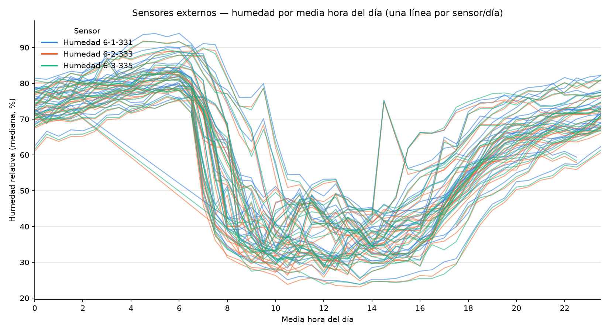
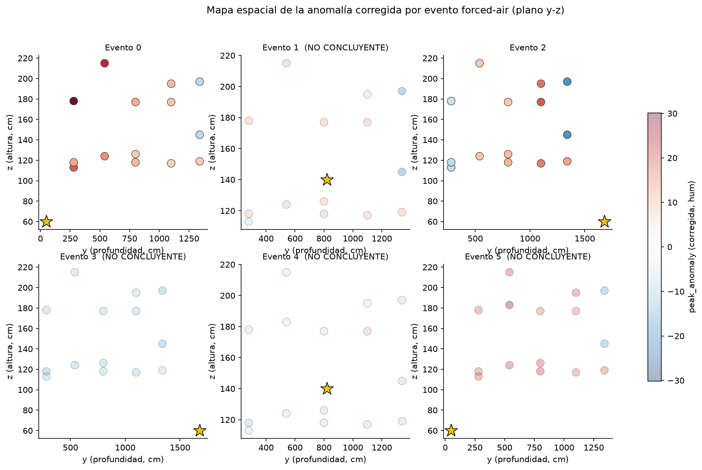
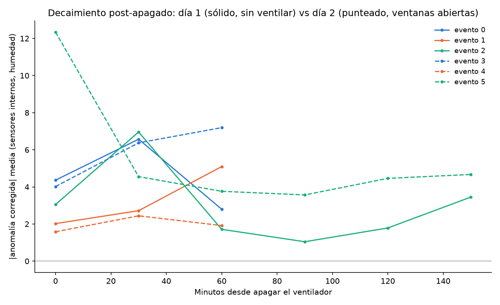

Pruebas de ventilador: solo 2 de 6 se pudieron leer
El 22 y 23 de agosto se hicieron 6 pulsos de ventilador con nebulizador, de 20 a 49 minutos, desde tres puntos de la nave. La pregunta era hacia dónde y hasta dónde llega el aire. El clima de esos días complicó la respuesta.
Primero, el clima: cambia más de un día a otro que lo que mueve el ventilador
-
Sólido
Al mediodía, la humedad de afuera puede variar de 10 a 22 puntos entre un día y otro, justo en el horario de las pruebas.
Comparar un día de prueba contra un día normal mide sobre todo el clima. Por eso se descontó lo que marcaban los sensores de afuera a la misma hora. Después de esa corrección, el ruido que queda es de solo 0,5 a 1,9 puntos.

Las 6 pruebas
Una prueba cuenta como legible solo si el efecto es más fuerte cerca del ventilador y más débil lejos. Si toda la nave cambia parejo, lo más probable es que sea el clima y no el ventilador.

-
Sólido
Solo 2 de las 6 pruebas muestran un efecto local real del ventilador: la 1 y la 3, ambas del primer día.
-
Sólido · pero solo 2 pruebas
Esas dos se comportaron distinto: en la prueba 1 el efecto avanzó como un frente; en la prueba 3 llegó a todas partes al mismo tiempo, solo que más débil lejos.
Con dos casos no se puede decir cuál es el comportamiento normal del ventilador en esta nave.
-
Sugestivo
Las dos pruebas legibles soplaban a 2 metros de una puerta. La del medio de la nave, a más de 5 metros de cualquier abertura, no fue legible ninguna de las dos veces.
Puede ser la cercanía a la abertura o simplemente la pared al lado. Con 3 puntos de entrada no se puede separar.
-
Aún sin respaldo
Con estos datos todavía no se pueden fijar ajustes del ventilador (tiempos, duración) para el control automático.
Abrir las ventanas después del ventilador
El segundo día, apenas se apagaba cada pulso, se abrieron las dos ventanas por más de una hora (las puertas siguieron cerradas). Eso no quedó registrado en la bitácora; se reconstruyó después. Así que el día 2 no fue una repetición del día 1: fue otro experimento.
-
Sugestivo · 1 caso
En una de las tres pruebas del día 2 (la 5), la humedad que quedó después del pulso se ubicó cerca de la ventana, no cerca del ventilador.
Es una señal limpia, pero es un solo caso, y en ese punto "cerca de la ventana" y "lejos del ventilador" son casi lo mismo. Encaja con la idea de que ventilar cambia dónde queda la humedad; no la prueba.
-
Aún sin respaldo
Si abrir las ventanas hace que la humedad vuelva más rápido a lo normal.
Las pruebas difieren en demasiadas cosas (punto de entrada, duración, tiempo disponible antes de la siguiente) para comparar.

Detalle técnico corrección, criterio de legibilidad, números por prueba
Corrección por clima (diferencia en diferencias). Para cada prueba se compara el día de la prueba con días "tranquilos" a la misma hora, y se le resta la anomalía promedio de los sensores de afuera en ese mismo instante: anomalía corregida = anomalía − promedio(anomalía externa). El ruido residual (cuánto discrepan entre sí los 3 sensores externos después de quitar lo común) queda en 0,5–1,9 puntos, contra 10–22 sin corregir.
Criterio de legibilidad. Correlación de Spearman entre distancia al punto de entrada y |anomalía corregida|, calculada aparte para humedad y temperatura. Cuenta como legible si r ≤ −0,3 y p ≤ 0,10. Una versión anterior y más débil (solo "el sensor más afectado supera 2 veces el ruido") daba 5 de 6; este criterio da 2 de 6.
| Prueba | Fecha y hora | Entrada (x, y, z cm) | Abertura más cercana | r | p | Legible |
|---|---|---|---|---|---|---|
| 1 | 22 ago 12:00 | (204, 50, 60) frente | Puerta S, 204 cm | −0,86 | 8×10⁻⁵ | Sí |
| 2 | 22 ago 14:00 | (30, 820, 140) lateral | Ventana O, 513 cm | +0,32 | 0,26 | No |
| 3 | 22 ago 16:00 | (204, 1680, 60) fondo | Puerta N, 204 cm | −0,85 | 1×10⁻⁴ | Sí |
| 4 | 23 ago 09:00 | (204, 1680, 60) fondo | Puerta N, 204 cm | +0,07 | 0,82 | No |
| 5 | 23 ago 11:00 | (30, 820, 140) lateral | Ventana O, 513 cm | +0,58 | 0,025 (signo opuesto) | No |
| 6 | 23 ago 13:00 | (204, 50, 60) frente | Puerta S, 204 cm | −0,42 | 0,12 | No |
Dirección. Prueba 1: la demora del pico crece con la distancia (r = +0,61, p = 0,02), un frente que viaja. Prueba 3: la amplitud cae con la distancia (r = −0,85) pero la demora no (r = −0,07, n.s.), atenuación pareja.
Prueba 4. Esa mañana la humedad de afuera pasó de unos −8 a +19 puntos de anomalía en hora y media, más rápido de lo que la nave podía seguir. Se ve como una anomalía negativa casi igual en todo el volumen, sin relación con la distancia.
Después de apagar (30–90 min). Correlación con la distancia al ventilador frente a la distancia a la ventana más cercana. Prueba 5: ventilador r = +0,41 (p = 0,125, signo opuesto), ventana r = −0,72 (p = 0,003). Pruebas 1 y 3 (día 1): centradas en el ventilador (r = −0,80 y −0,60). Pruebas 4 y 6: ninguna encaja.
Corrección de coordenada. El punto de entrada de las pruebas 3 y 4 estaba mal medido (y = 1380 en vez de 1680). Al corregirlo, todos los resultados salieron idénticos: el método usa el orden de los sensores por distancia, y ese orden no cambia.